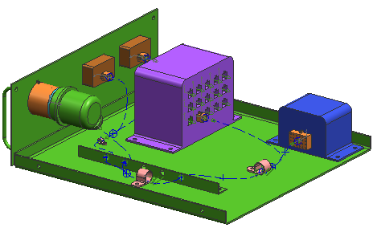

In this activity, you will make a change that requires this last wiring segment to be routed through a clamp. You could add one to the assembly, but you can also add one to your wiring harness subassembly. That way if you use the harness in a formboard layout, the clamp can be included with it.

Launch the Edit routing paths activity.
For additional information, see the following:
Use the Command Finder to search for Spline Path and Heal Path.